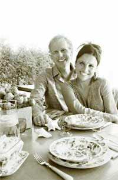

Actor Julia Louis-Dreyfus and writer/producer Brad Hall are maestros of comedy, but behind the scenes they get serious about their green home, energy independence and the personal satisfaction of their sustainable lifestyle.
You may recall the famous “Seinfeld” episode in which Russell Dalrimple, a shallow TV executive, becomes so love-struck with Elaine Benes that he joins Greenpeace in a preposterous effort to win her heart. “When I go back to her this time, she’ll respect me,” he muses aboard a Greenpeace dingy that’s chasing a whaling ship. Dalrimple’s plan fails miserably when he is struck by a whaler’s stray harpoon, tumbles overboard and meets his maker at the bottom of the sea.
As with most Seinfeld episodes, there are more layers of humor than meet the eye. In this case, it is art imitating life: Elaine’s real-life counterpart, Julia Louis-Dreyfus, would not only have endorsed Dalrimple’s mission, she might’ve climbed into the dinghy alongside him.
Since well before Julia joined the cast of Saturday Night Live in 1982 and Seinfeld in 1990, she has been, in her words, “a card-carrying environmentalist and a bleeding-heart liberal.” And she has the track record to prove it - having been actively involved with nearly a dozen environmental organizations, including the Natural Resources Defense Council, Heal the Bay, National Parks Conservation Association, Trust for Public Land and Waterkeeper Alliance.
And there’s one more ironic layer to the story: The man who actually did win Julia’s heart, Brad Hall, has more than a few things in common with Dalrimple (not, of course, his foibles or misfortunes): Brad is a TV executive who has written and produced shows ranging from “The Single Guy” to “Frasier.” He also is an eco-crusader of the sort who could easily be convinced to wrangle with whaling ships. Among his green efforts, Brad helps lead the effort at the Environmental Media Association to get wasteful and energy-guzzling Hollywood studios to streamline their operations.
From GOO! to a green home
Julia and Brad met while studying at Northwestern University. At age 19, she joined his improvisational acting troupe, The Practical Theater. “We met during the Jimmy Carter era, so conservation was certainly a part of our ethos,” Brad says. “In our skits we parodied the problems of the day - oil dependency, environmental negligence - a lot of the issues we’re now seeing reemerge on the public radar.”
Today the couple has two sons, Henry, 12, and Charlie, 7. Brad grew up in the 1970s in Santa Barbara, Calif., where he established “deep hippie roots” and learned to surf as soon as he could walk. When he was 12 years old, one of the oil derricks off the Santa Barbara coast exploded due to a drilling pressure problem, covering the beaches with black sludge. “The fish were belly-up, the birds were completely slimed,” he remembers. “My parents had to rinse them with gasoline to clean their feathers.”
In the wake of the disaster, the people of Santa Barbara started an anti-oil campaign called GOO!, which stood for Get Oil Out! The GOO! movement was spread through posters and bumper stickers featuring a peace sign in the middle of the “O” that stood for oil. “I haven’t seen a GOO! sign in years,” Brad says, “but it’s now more relevant than ever.”
Brad is disappointed that he never had a GOO! bumper sticker for his Honda EV - the electric minivan he bought in 1998 when only a few hundred were released. The model has since been discontinued and the individual units recalled - Brad tried to convince Honda to let him keep his, but to no avail. Conspiracy? “I never said so,” Brad deadpans.
But beyond Julia and Brad’s extensive public activism, perhaps the most important environmental project they’ve taken on so far is translating their long-held theories into personal practice. Last year the couple commissioned their friend David Hertz, a Santa Monica, Calif.-based architect who specializes in sustainable architecture, to transform their oceanfront bungalow just north of Santa Barbara into a showcase of high-performance green design.
The end result is no McMansion: With its clean architectural lines, simple but plush furnishings and hand-printed organic fabrics, the cottage is so cozy, tranquil and understated that it comes off without any Hollywood pretension. But the richly hued array of sustainably harvested hardwoods, solar panels, chemical-free hot tub and dozens of high-tech energy efficiency mechanisms (see Page 42) make it unmistakably haute green. The twin Toyota Priuses parked outside are the capstones of the couple’s low-impact lifestyle.
Bringing The Outside In
Julia is the first to admit that she’s not by nature a minimalist. Sitting on the terrace of her newly renovated beachfront home, she calls herself “a born maximalist - a pleasure-seeker, queen of creature comforts. I can’t live without high-thread- count linens and hot showers.”
Brad, on the other hand, would be happy living on the wild side: “If I wasn’t married, I probably would live in a tent or a yurt or a tipi somewhere - I am a big believer in bare-bones, simple living. But I have a wife and two kids who don’t necessarily want that lifestyle. At some point you have to figure out comfort levels and balance these things. We try to live simply and conscientiously, but not at the expense of comfort.”
It works to the couple’s advantage, then, that so many cutting-edge innovations have emerged in sustainable building, renewable energy and clean-car technology that make it possible to live with all the creature comforts, but at a fraction of the environmental impact. “I’m not the type to ride a bike to work everyday, but I’ll damn well buy an electric car,” Julia says. “I’m not the type to cut back on hot showers, but there’s no harm in hot water when it’s warmed by the sun.”
Brad quickly admits that any weekend home is itself an unnecessary environmental burden: “I’m well aware that having a second home contradicts my simple living theory - but it made us doubly committed to renovating the house as responsibly as possible,” he says. The couple’s first concern was keeping the scale small. The four-bedroom house is well under 3,000 square feet - not bad when you consider the palatial compounds most Hollywood celebrities choose to build.
And it amazed them to discover that living responsibly does not require a change in lifestyle. “It doesn’t have to be about sacrificing comfort and living with less,” Brad says. In fact, it’s living with so much more - peace of mind, better health and the elegance of sustainable design, which maximizes natural lighting, natural ventilation, natural textures and materials, and puts an emphasis on craftsmanship. “In every way, [the home’s design] brings the outside in,” Brad says.
The wall-to-wall windows make it difficult indeed to discern where the house ends and the sky, beach and ocean begin. The glass walls slide open, connecting the terraces off the bedrooms and living room to become part of the living space. All the rooms are connected by transom windows, so the air is constantly circulating and there’s no need for air conditioning, which considerably diminishes energy demand. And the roof is retractable: It functions as a “thermal chimney” that exhausts hot air upward and draws ocean breezes through the windows.
The roof also does wonders to integrate the outside world - the gulls, pelicans and weather patterns circling overhead. There’s a moisture sensor that automatically shuts the roof if it begins to rain. But there’s no protection against the birds: “It’s only a matter of time before one of those things takes a crap in the house,” Julia says. “I’m not too keen on that, but what can I tell ya? They live here, too.”
Given the vast expanse of windows, the glass needed to be treated for insulation. It’s laminated with a layer of invisible material known as a “heat mirror” that deflects warmth from sunlight streaming in during the summer and insulates against heat loss during the winter. What little electric lighting they need is energy-efficient halogen, and the kitchen appliances and clothes washer and dryer are all Energy Star-certified. The rooftop solar thermal panels produce hot water that flows through radiant tubing in the floors to heat the house. And the photovoltaic panels are net-metered so that during the week when the family is in Los Angeles the unused energy goes directly to the grid and creates a credit at the local utility.
As for materials, the couple asked their Santa Barbara-based contractor Jed Hirsch to be sure that all the lumber, doors, windows, plumbing and electrical fixtures gutted from the original house were salvaged and donated to a builder’s exchange for reuse.
Nearly all the wood purchased for the renovation was certified to be sustainably harvested by the Forest Stewardship Council, including the mahogany used in the kitchen, the Ipe (a dark tropical hardwood, pronounced EE-pay) used for the decks, and the cedar that covers the exterior. Other materials also were chosen for their sustainability, including the bamboo flooring used throughout the house and the “Syndecrete” - a lightweight concrete material invented by architect Hertz that incorporates recycled fly ash and carpet fiber - used for the kitchen countertops, bathrooms, fireplaces and outdoor terraces.
Our Common Denominator
When pressed to explain the personal and political motivations behind their lifestyle, Brad knits his brow and excitedly wags his knees. “In spite of all the trouble in the world right now,” he says, “solutions are on the rise, and make me hopeful - innovations in energy and green design have huge and incredibly exciting implications for our foreign policy and environment.”
Julia has a less upbeat response: Abandoning her characteristic brio, she slumps into the living room couch with a quiet groan. “This is a really scary time,” she says. “The war and terrorism in the Middle East, the crisis of leadership in many of the oil-supply countries in the developing world, the crisis of global warming - all these are very clearly tied to energy. What’s so frightening about these issues is feeling like you don’t have any control over them.” Julia describes her lifestyle decisions as ways to gain control and feel less guilty. “I walk around feeling a sort of existential guilt all the time; and honestly for me this house is a way of feeling less guilty about the universe.”
This guilt, she says, stems from a keen sensitivity to Americans’ disproportionate resource use: “We are 5 percent of the global population and consume a third of the total resources - on some level we should all feel guilty relative to the world.”
Julia grew up spending her time between Wyoming, New York and Washington D.C., a combination that gave her an appreciation for both the natural world and the policies that govern it. But her sensitivity to America’s profligate ways was kindled during her childhood, when her family spent years traveling in developing nations. They lived in Sri Lanka, Colombia and Tunisia, where her stepfather was working as a doctor with Project HOPE (Health Opportunities for People Everywhere).
“From a very early age I was made aware of the idea of being a part of something bigger than you, something bigger than our lives,” Julia says. “That impulse definitely drives my environmental work. It’s certainly part of what compelled me to want to live efficiently and renovate this house - to support solutions to problems that reach well beyond my lifetime.”
Julia and Brad agree that energy is the defining environmental and political challenge of our time. “The message couldn’t be any clearer: If you’re looking for the magic bullet that will solve both our global warming crisis and our growing foreign policy crises, change the energy system,” Brad says. Julia stresses that population growth is equally urgent. “The problem of resource depletion clearly goes hand in hand with the growth in demand.” Even without population growth, she points out, resource depletion will escalate as developing countries, such as China and India, industrialize and become major consumers of electricity and gas.
Despite exposure to plenty of other higher causes to which she could have devoted her philanthropic efforts - poverty, hunger and disease - Julia says the environment was always her first priority. “The environment is the common denominator of all humanity,” she says. “It’s our common ground, quite literally - it’s the thing we all share and it’s connected to everything else. Before computers, telephone lines and television connect us, we all share the same air, the same oceans, the same mountains and rivers. We are all equally responsible for protecting them. If we don’t tend them carefully, you can be sure the other scourges - drought, poverty, hunger, sickness - will be the result.”
So what can we all do to preserve and protect this common denominator? If building green homes and buying clean cars is not quite within our budgets near-term, how else can we act responsibly? “Simple,” Julia says. “Get out there and hit the ballot box. Vote for leadership that will protect public interest over corporate interest.”
Palpable Serenity
Not all of Julia and Brad’s motivations for efficient living stem from political concerns. They also enjoy a good measure of personal reward.
“Every morning I wake up in this house, it changes the way I approach my day, and it’s a fantastic feeling,”
Brad says. “There’s a serenity here that is palpable.” Brad says he’s never been into feng shui, but the way Hertz built this house makes him feel purposeful, focused and in command. “I sit here, working at my desk or in the living room, looking out as dolphins go by, at the vastness and movement of the ocean - I am constantly feeling a part of it all, connected.”
Hertz designed balconies made of horizontal wooden slats that cast soothing shadows on the bamboo floor. The sunlight plays on the natural, unlacquered woods - mahogany with a reddish-gold hue, elegant blonde bamboo and deep chocolate-colored Ipe. The walls are finished in plaster with textured trowel marks and a soft wax coating. “It gives a certain depth and warmth to the modern lines of the house,” Hertz says. “I didn’t want the feeling of cold uniformity you get with paints and shellacs. I wanted an environment that feels clean and tranquil, but also natural, hand-crafted, human.”
Likewise, the Syndecrete, manufactured by Hertz’s Santa Monica-based company Syndesis, is sanded down to a texture like terra cotta or flagstone rather than concrete, and has an organic feel to it. “I don’t want to get artsy-fartsy,” Brad says, “but you find yourself touching everything - the walls, the banisters, the Syndecrete, the hemp fabrics. The whole thing is very sensuous. It’s tactile - like the hot sand on the beach. You want to roll around in it!”
What appeals to Julia is the way the whole house is spatially integrated. Downstairs, the living and dining areas are part of one room with ceilings that span up to the second floor; the upstairs bedrooms and office are arranged around this central courtyard. The composition of glass, floating balconies and walkways above gives the house an airy, expansive feeling. “To me it has a feeling of unity - between the indoors and the outdoors, and between all the people sharing the space,” Julia says. “I never feel disconnected from Brad or the boys, even when they’re in the ocean.”
Julia carries this feeling of connectedness into her work and life - both on camera and at the environmental pulpit. “I am a big believer in the old ‘Think globally, act locally’ truism,” she says. “If you feel rooted in your home and family, if you’re active in your community, there’s nothing more empowering. The best way to make a difference in the world is to start by making a difference in your own life.”
Adapted from Grist Magazine (subscribe to Grist’s free e-mail at www.grist magazine.com/signup) by author Amanda Griscom, who also writes “Muckraker,” a weekly column on Beltway environmental politics published in Grist Magazine and syndicated on Salon.com. Her writing on energy, politics and the environment also has appeared in publications ranging from The New York Times and The Nation to Rolling Stone and InStyle.
Julia and Brad’s Green Dream Home
Here’s the “who” and “what” that created Julia Louis-Dreyfus and Brad Hall’s sustainable oceanfront bungalow.
Architect
Syndesis David Hertz Santa Monica, Calif. (310) 829-9932 www.syndesisinc.com
Contractor
Jed Hirsch Santa Barbara, Calif. (805) 687-0786
Flooring
GreenWood (horizontal-grain bamboo strip flooring) (949) 369-2733 www.greenwoodflooring.com
Glass
Alpen (insulating glass and heat mirror) (800) 882-4466 www.alpeninc.com
Solar
Solar Electrical Systems(photovoltaic system) (805) 497-9808 www.solarelectricalsystems.com
Radco
(solar collectors) (805) 928-1881
All Valley Solar
(solar thermal system) (323) 850-0720 www.allvalleysolar.com
Wood
Earth Source Forest Products(source for sustainable mahogany) (866) 549-9663 www.earthsourcewood.com
Weyerhaeuser Corporation (sustainable cedar) (800) 525-5440 www.weyerhaeuser.com
Capital Lumber Company (sustainable Ipe) (602) 381-0709 www.capital-lumber.com
Forest Stewardship Council (certifies products from sustainably managed forests) www.fsc.org
Energy-efficient Appliances
(All appliances Energy Star certified) (888) 782-7937 www.energystar.gov
Whirlpool (Energy Star dishwasher, refrigerator, and clothes washer and dryer) www.whirlpool.com
Panasonic (Energy Star television) www.panasonic.com/environmental
Interior Decor
Kathryn Ireland (designed the fabrics and rugs) Santa Monica, Calif. (310) 315-4351
|
 Photos by Michael Weschler |
|
|